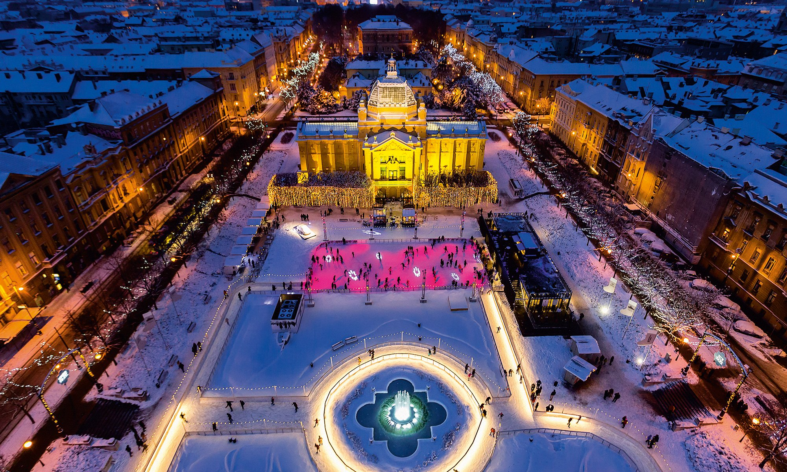

ADVENT
Advent je vrijeme kada gradovi i domovi postaju posebni prostori ispunjeni svjetlucavim ukrasima, mirisima i okusima koji najavljuju Božić. Adventske kućice, često smještene na trgovima, nude bogatu ponudu tradicionalnih jela, poput kuhanog vina, fritula, kobasica, pečenih kestena i raznih slastica s cimetom i orasima. Ovi mali drveni štandovi ukrašeni su lampicama, vijencima i zimzelenim grančicama, stvarajući toplu i veselu atmosferu. U domovima se pripremaju adventski vijenci s četiri svijeće, dok kuhinje mirišu na kolačiće, medenjake i kuhano voće. Advent je vrijeme kada se okupljamo uz blagdanski stol, dijelimo obroke i uživamo u čaroliji predbožićnog ugođaja kroz spoj ukusne hrane i prekrasnih ukrasa
10 najboljih advenata u Europi
- Budimpešta
- Prag
- Beč
- Zagreb
- Pariz
- Basel
- Hallstat
- Kopenhagen
- Reykjavik
- Stockholm

Recept za jednostavne fritule